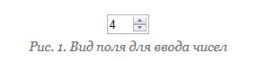
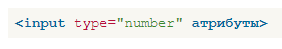
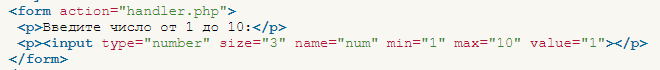
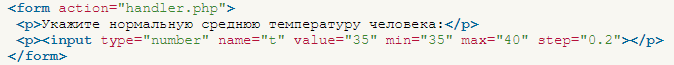

Ввод чисел
Для ввода чисел предназначено специальное поле, которое допускает ограничения по нижней и верхней границе, а также устанавливает шаг приращения. Само поле для ввода чисел похоже на обычное текстовое поле, но со стрелками, которые позволяют увеличивать и уменьшать значение (рис. 1).

Синтаксис создания поля следующий:

Допустимые атрибуты перечислены в табл. 1.
| Атрибут | Описание |
|---|---|
| min | Минимальное значение. |
| max | Максимальное значение. |
| size | Ширина поля. |
| step | Шаг приращения числа. Может быть как целым (2), так и дробным (0.2). |
| name | Имя поля, предназначено для того, чтобы обработчик формы мог его идентифицировать. |
| value | Начальное число, которое выводится в поле. |
Для ограничения введённого числа предназначены атрибуты min и max - они могут принимать отрицательное и положительное значение. При достижении верхнего или нижнего порога стрелки в поле в зависимости от браузера блокируются или не дают никакого эффекта (пример 1).
Несмотря на такие запреты, в любом случае в поле самостоятельно можно вводить любые значения, включая текст. Атрибуты min и max работают только при использовании стрелок в поле.
Пример 1. Ограничение ввода чисел

Если значение min превышает max, то атрибут min игнорируется.
Атрибут step задаёт шаг приращения и по умолчанию равен 1. В то же время значение может быть и дробным числом, как показано в примере 2.
Пример 2. Шаг приращения

Браузеры плохо поддерживают это поле, пока лишь это делает Chrome и Opera. В остальных браузерах поле для ввода числа приобретает вид обычного текстового поля.